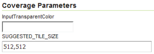

Workbook¶
Setting up a half-day training workbook.
Workbooks are carefully constructed to be used as:
attendee notes and step-by-step exercises
instructor presentation and answer key
Workbook structure¶
Directory structure:
.gitignore- optional to ignore files such as the build directoryREADME.md- workbook title and objectivesbuild.xml- ant build scriptbuild.properties- fill-in-the blank properties for build scripttarget/- generated outputsrc/- workbook contentssrc/config.py- sphinx build file
build.xml¶
Apache Ant is a cross platform build system similar to the unix make command. It defines a series of build targets that can be performed on the command line. Each build target is a small recipe consisting of tasks to be performed. Build targets can depend on each other (so that training material must be generated before being packaged as a zip bundle).
To list ant build targets intended for use (those that have a desription):
ant -p
% ant -p
Buildfile: example/build.xml
Ant script to run sphinx-build.
Main targets:
clean clean up build directory
instructor instructor notes
slides instructor slides
workbook attendee workbook
Default target: build
README.md¶
Shown when browsing content in GitHub and GitLab. Markdown used to avoid conflicting with sphinx-build.
conf.py¶
Configuration file for sphinx-build and configure builders for html and slide output.
The config.py file is written in python, we have used this to:
Parse
build.properitesCurrent year, copyright and license information
Extensions used
External links
Configure html builder
Configure slide builder
1 2 3 4 5 6 7 8 9 10 11 12 13 14 15 16 17 18 19 20 21 22 23 24 25 26 27 28 29 30 31 32 33 34 35 36 37 38 39 40 41 42 43 44 45 46 47 48 49 50 51 52 53 54 55 56 57 58 59 60 61 62 63 64 65 66 67 68 69 70 71 72 73 74 75 76 77 78 79 80 81 82 83 84 85 86 87 88 89 90 91 92 93 94 95 96 97 98 99 100 101 102 103 104 105 106 107 108 109 110 111 112 113 114 115 116 117 118 119 120 121 122 123 124 125 126 127 128 129 130 131 132 133 134 135 136 137 138 139 140 141 142 143 144 145 146 147 148 149 150 151 152 153 154 155 156 157 158 159 160 161 162 163 164 165 166 167 168 169 170 171 172 173 174 175 176 177 178 179 180 181 182 183 184 185 186 187 188 189 190 191 192 193 194 195 196 197 198 199 200 201 202 203 204 205 206 207 208 209 210 211 212 213 214 215 216 217 218 219 220 221 222 223 224 225 226 227 228 229 230 231 232 233 234 235 236 237 238 239 240 241 242 243 244 245 246 247 248 | # -*- coding: utf-8 -*-
#
# Configuration file for the Sphinx documentation builder.
#
# This file does only contain a selection of the most common options. For a
# full list see the documentation:
# http://www.sphinx-doc.org/en/master/config
# -- setup --------------------------------------------------------------------
import datetime
import os
import warnings
# ignore warning from docutils code
# https://github.com/sphinx-contrib/confluencebuilder/pull/289
warnings.filterwarnings("ignore", category=FutureWarning)
now = datetime.datetime.now()
#Current year
year = now.year
build_dir = os.path.sep.join(os.getcwd().split(os.path.sep)[:-2])
properties_file = os.path.join(build_dir,'build.properties')
build_properties = dict()
with open(properties_file, 'r') as file:
for line in file:
key = line.split('=')[0]
value = line.split('=')[1].strip('\n')
build_properties[key] = value
# -- Path setup --------------------------------------------------------------
# If extensions (or modules to document with autodoc) are in another directory,
# add these directories to sys.path here. If the directory is relative to the
# documentation root, use os.path.abspath to make it absolute, like shown here.
#
# import os
# import sys
# sys.path.insert(0, os.path.abspath('.'))
# -- Project information -----------------------------------------------------
project = build_properties['project']
copyright = u'{}, GeoCat BV'.format(year)
author = build_properties['author']
# The short X.Y version.
version = now.strftime('%Y.%m')
# The full version, including alpha/beta/rc tags.
release = now.strftime('%Y.%m.%d')
# -- General configuration ---------------------------------------------------
# If your documentation needs a minimal Sphinx version, state it here.
#
# needs_sphinx = '1.0'
# Add any Sphinx extension module names here, as strings. They can be
# extensions coming with Sphinx (named 'sphinx.ext.*') or your custom
# ones.
extensions = [
'sphinx.ext.ifconfig',
'sphinx.ext.extlinks',
'hieroglyph'
]
# Add any paths that contain templates here, relative to this directory.
templates_path = ['_templates']
# The suffix(es) of source filenames.
# You can specify multiple suffix as a list of string:
#
# source_suffix = ['.rst', '.md']
source_suffix = '.rst'
# The master toctree document.
master_doc = 'index'
# The language for content autogenerated by Sphinx. Refer to documentation
# for a list of supported languages.
#
# This is also used if you do content translation via gettext catalogs.
# Usually you set "language" from the command line for these cases.
language = None
# List of patterns, relative to source directory, that match files and
# directories to ignore when looking for source files.
# This pattern also affects html_static_path and html_extra_path.
exclude_patterns = ['Thumbs.db', '.DS_Store']
# The name of the Pygments (syntax highlighting) style to use.
pygments_style = None
# -- Extension External Links ------------------------------------------------
extlinks = {
'geoserver': ('http://docs.geoserver.org/latest/en/user/%s',''),
}
# -- Options for HTML output -------------------------------------------------
# The theme to use for HTML and HTML Help pages. See the documentation for
# a list of builtin themes.
#
html_theme = 'geocat_rtd'
# Add any paths that contain custom themes here, relative to this directory.
html_theme_path = [
os.path.join(build_dir,build_properties['theme_path'])
]
# Theme options are theme-specific and customize the look and feel of a theme
# further. For a list of options available for each theme, see the
# documentation.
#
html_theme_options = {
'logo_only': True,
'display_version': False,
'prev_next_buttons_location': 'none',
'show_sphinx': False,
'show_home': False,
'is_prerelease': True
}
# The name of an image file (relative to this directory) to place at the top
# of the sidebar.
html_logo = 'geocat_product_logos.svg'
# The name of an image file (within the static path) to use as favicon of the
# docs. This file should be a Windows icon file (.ico) being 16x16 or 32x32
# pixels large.
html_favicon = 'favicon.ico'
html_show_sourcelink = False
# Add any paths that contain custom static files (such as style sheets) here,
# relative to this directory. They are copied after the builtin static files,
# so a file named "default.css" will overwrite the builtin "default.css".
#html_static_path = ['_static']
# Custom sidebar templates, must be a dictionary that maps document names
# to template names.
#
# The default sidebars (for documents that don't match any pattern) are
# defined by theme itself. Builtin themes are using these templates by
# default: ``['localtoc.html', 'relations.html', 'sourcelink.html',
# 'searchbox.html']``.
#
# html_sidebars = {}
# -- Options for HTMLHelp output ---------------------------------------------
# Output file base name for HTML help builder.
htmlhelp_basename = 'GeoCatThemeExampledoc'
# -- Options for Hieroglyph output ---------------------------------------------
slide_title = project
autoslides = True
slide_theme = 'geocat_slides'
subtitle = build_properties['subtitle']
slide_footer = 'GeoCat '+version
slide_levels = 4
slide_numbers = True
# requires html and slides build
slide_link_to_html = True
slide_link_html_to_slides = True
slide_link_html_sections_to_slides = True
slide_relative_path = '_slides/'
slide_html_relative_path = '../'
slide_html_slide_link_symbol = '§'
# -- Options for LaTeX output ------------------------------------------------
latex_elements = {
# The paper size ('letterpaper' or 'a4paper').
#
# 'papersize': 'letterpaper',
# The font size ('10pt', '11pt' or '12pt').
#
# 'pointsize': '10pt',
# Additional stuff for the LaTeX preamble.
#
# 'preamble': '',
# Latex figure (float) alignment
#
# 'figure_align': 'htbp',
}
# Grouping the document tree into LaTeX files. List of tuples
# (source start file, target name, title,
# author, documentclass [howto, manual, or own class]).
latex_documents = [
(master_doc, 'GeoCatThemeExample.tex', 'GeoCat Theme Example',
'GeoCat BV', 'manual'),
]
# -- Options for manual page output ------------------------------------------
# One entry per manual page. List of tuples
# (source start file, name, description, authors, manual section).
man_pages = [
(master_doc, 'example', 'GeoCat Theme Example',
[author], 1)
]
# -- Options for Texinfo output ----------------------------------------------
# Grouping the document tree into Texinfo files. List of tuples
# (source start file, target name, title, author,
# dir menu entry, description, category)
texinfo_documents = [
(master_doc, 'GeoServerEnterprise', 'GeoServer Enterprise Documentation',
author, 'GeoServerEnterprise', 'One line description of project.',
'Miscellaneous'),
]
# -- Options for Epub output -------------------------------------------------
# Bibliographic Dublin Core info.
epub_title = project
# The unique identifier of the text. This can be a ISBN number
# or the project homepage.
#
# epub_identifier = ''
# A unique identification for the text.
#
# epub_uid = ''
# A list of files that should not be packed into the epub file.
epub_exclude_files = ['search.html']
|
build.properties¶
Provide properties to conf.py:
1 2 3 4 5 | project=GeoCat Theme Example
subtitle=Writing guidelines
author=GeoCat BV
theme_path=..
pdf=Writing_Guide
|
Workbook contents¶
Sphinx toctree contents:
src/index.rst- title page and table of contentssrc/figure/- diagrams and illustrationssrc/img/- common images
Common sections:
src/welcome/index.rst- overview and objectivessrc/review/index.rst- optional review for certifications
Section contents:
src/section/index.rst- section pagesrc/section/exercsie.txt- exercise included in textsrc/section/img- images and screen snapssrc/section/files- files for literal includes and downloads
Initial index.rst¶
Carefully constructed providing:
Workbook title
toctree caption for the rtd theme
Instructor note linking to slides
placeholder slides as needed
1 2 3 4 5 6 7 8 9 10 11 12 13 14 15 16 17 18 19 20 21 22 23 24 25 26 27 28 29 30 31 32 33 34 35 36 37 38 39 40 41 42 43 44 45 46 47 48 49 50 51 52 53 54 55 56 57 58 59 60 | ############################
GeoCat Documentation Example
############################
.. ifnotslides::
Writing guide with cut-and-paste examples for your own documentation, user manuals, and training materials.
.. slide:: GeoCat Introduction
:level: 1
:class: slide-intro
.. figure:: /img/geocat_logo_text.*
Spatial data publication and discovery with products, services and philosophy following the free and open source source software.
Software development company based in Bennekom, with developers in the Netherlands, Spain and Canada.
.. _contents:
.. slide:: GeoCat Documentation Example
:level: 2
:inline-contents: True
.. toctree::
:maxdepth: 1
:caption: Contents
guide/index
workbook/index
.. toctree::
:caption: Reference
:hidden:
glossary
.. ifnotslides::
Reference:
* :doc:`glossary`
* :ref:`genindex`
.. only:: instructor
.. admonition:: `Sides <_slides/index.html>`__
* :kbd:`t` for slide table
* :kbd:`c` for presenters console
.. slide:: Free and Open Source Company
:level: 1
:class: slide-heart
.. slide:: Made with ♥ by GeoCat
:level: 2
:class: slide-outro
For more information about GeoCat, visit `www.geocat.net <https://www.geocat.net>`__
|
figure folder¶
Used for svg and png diagrams:
geoserver_data_directory.svg
geoserver_data_directory.png
Figures are provided with a caption describing the content (even if that ends up repeating some of the text).
The GeoServer data directory is the location of the configuration information on disk.
GeoServer data directory¶

The GeoServer data directory is the location of the configuration information on disk.
.. figure:: /figure/geoserver_data_directory.*
GeoServer data directory
Recommend use of a single shared figure folder as shown above with (leading / indicates path is relative to the config.py file). This makes it easier to manage and update diagrams.
files folder¶
Used for scripts, configuration files, and sample data such as icons:
elevation.sld
place.png
place.svg
Keep in mind this content is bundled with the workbook content and is not intended for handling large files.
Scripts and configuration files are often presented as a code example using literalinclude directive.
Here is an improved
elevation.sldSLD showing the elevations:<?xml version="1.0" encoding="ISO-8859-1"?> <StyledLayerDescriptor version="1.0.0" xsi:schemaLocation="http://www.opengis.net/sld http://schemas.opengis.net/sld/1.0.0/StyledLayerDescriptor.xsd" xmlns="http://www.opengis.net/sld" xmlns:ogc="http://www.opengis.net/ogc" xmlns:xlink="http://www.w3.org/1999/xlink" xmlns:xsi="http://www.w3.org/2001/XMLSchema-instance"> <NamedLayer> <Name>elevation_points</Name> <UserStyle> <Title>Elevation Points</Title> <FeatureTypeStyle> <Rule> <Title>azure point</Title> <PointSymbolizer> <Graphic> <Mark> <WellKnownName>cross</WellKnownName> <Fill> <CssParameter name="fill">#333333</CssParameter> </Fill> </Mark> <Size>3</Size> </Graphic> </PointSymbolizer> <TextSymbolizer> <Label> <ogc:PropertyName>elevation</ogc:PropertyName> m </Label> <LabelPlacement> <PointPlacement> <AnchorPoint> <AnchorPointX>0.5</AnchorPointX> <AnchorPointY>0.0</AnchorPointY> </AnchorPoint> <Displacement> <DisplacementX>0</DisplacementX> <DisplacementY>2</DisplacementY> </Displacement> </PointPlacement> </LabelPlacement> </TextSymbolizer> </Rule> </FeatureTypeStyle> </UserStyle> </NamedLayer> </StyledLayerDescriptor>
#. Here is an improved :download:`elevation.sld <files/elevation.sld>` SLD showing the elevations:
.. literalinclude:: files/elevation.sld
:language: xml
img folder¶
The root img folder is primarily used for branding or common screens such as how to login.:
gc_geosever_logo_300x300.png
Each section has an section/img folder used to manage screen snaps for the section.:
coverage_dem_bands.png
coverage_parameters.png
gray_preview.png
Screen snaps are used with the figure directive, so we can provide a caption.
The SUGGESTED_TILE_SIZE parameter is set automatically by GeoServer when images use internal tiling (generally this setting is not changed from its default).
Coverage parameters
The :guilabel:`SUGGESTED_TILE_SIZE` parameter is set automatically by GeoServer when images use internal tiling (generally this setting is not changed from its default).
.. figure:: img/coverage_parameters.png
Coverage parameters
Section index.rst¶
Use straight forward writing with three levels of headings:
Consistency is required as content is generted into both slides and workbooks
Consistent structure and writing is both profesional and functional helping comprehension and ability to scan and review material.
Page
****
Section
=======
Content
-------
Content
We are gradually shifting to numbering toctree and providing a heading for exercises to help attendees locate the right section to work on.
Exercise
^^^^^^^^
Workbook Writing¶
Care is taken to ensure that content generates as slides and workbook.
Workbooks are built with autoslides:
Each page turns into a single presentation.
Each heading becomes a new slide.
Headings are cross linked between workbook and slides
Slide headings¶
Use straight forward writing with three levels of headings:
Page
****
Section
=======
Content
-------
Slide content
Manage long pages using include directive.
Basics
******
.. include:: admin.txt
.. include:: workspace.txt
.. include:: datastore.txt
.. include:: layer.txt
.. include:: group.txt
.. include:: style.txt
ifslides and ifnotslides¶
Use ifslides and ifnotslides to control content included in presentation and workbook.
Access to the GeoServer data directory is required to manage the icons and fonts used for styling.
.. ifslides::
Data directory access required for icons and fonts.
.. ifnotslides::
Access to the GeoServer data directory is required to manage the icons and fonts used for styling.
Some content like references may only be in the workbook.
Reference:
.. ifnotslides::
Reference:
* :geoserver:`WMS reference <services/wms/reference.html>`
Slide directive¶
slide directive for additional slides.
.. slide:: GeoCat Introduction
:level: 1
:class: slide-intro
.. figure:: /img/geocat_logo_text.*
Spatial data publication and discovery with products, services and philosophy following the free and open source source software.
Software development company based in Bennekom, with developers in the Netherlands, Spain and Canada.
Theme provides built-in slide classes:

Slide-heart class¶
.. slide:: Free and Open Source Company
:level: 1
:class: slide-heart
Theme slide-outro is a nice way to end a presentation:

Use of slide-outro to end presentation.¶
Note doc link to return to top-level:
.. slide:: Questions and Review
:level: 2
:class: slide-outro
:doc:`/index`
Slide inline-contents used to generate a slide, and include the text in the workbook.
Writing guide with cut-and-paste examples for your own documentation, user manuals, and training materials.

Slide inline-contents example¶
.. slide:: GeoCat Documentation Example
:level: 2
:inline-contents: True
Writing guide with cut-and-paste examples for your own documentation, user manuals, and training materials.
Instructor notes¶
Use only directive to include content in the instructor build of the workbook.
Explore
What is the difference between the
CRS:84andEPSG:4326?Instructor Notes
The difference is the strict definition of axis order.
1 2 3 4 5 6 7 8 9 | .. admonition:: Explore
What is the difference between the ``CRS:84`` and ``EPSG:4326``?
.. only:: instructor
.. admonition:: Instructor Notes
The difference is the strict definition of axis order.
|
Writing Exercises¶
Avoid including exercise in slides¶
Use admonition and ifnotslides directive to avoid including the full exercises into presentations.
Exercise issue WMS 1.3.0 GetCapabilities request
To show the WMS GetCapabilities:
Navigate to page.
Select the
WMS_1.1.1_GetCapabilities.urlrequest. The full request is reproduced below, with line breaks added for clarity:http://localhost:8080/geoserver/wms? service=wms& version=1.1.1& request=GetCapabilities
The server endpoint,
service, andversionare all the same as we have seen before. The only difference is therequest, which isGetCapabilities. There are no other parameters needed.Click Submit.
.. nextslide:: WMS Exercises
.. admonition:: Exercise issue WMS 1.3.0 GetCapabilities request
.. ifnotslides::
.. include:: wms_getcapabilities_exercise.txt
Use admonition block-directives¶
Consistently use admonition to clearly indicate the type of exercise.
Demo
Instructor demo on screen or online video.
Exercise
Step-by-step exercise required to proceed with workbook.
Explore
Review and apply concepts covered in workbook.
Challenge
Go beyond the workbook with experimentation and research.
Manage long exercises in separate txt file¶
Manage long pages as a txt file using include directive.
.. literalinclude:: wms_getcapabilities_exercise.txt
:language: rst
Exercises are written using txt extension to avoid being processed by sphinx-build until included.
Step-by-step instructions¶
Writing step-by-step insteuctions:
Step should clearly state what is being performed
Include a screen snap attendee can use to check their work before hitting OK.
Show the result of the action as a new numbered step with a screen snap.
Sphinx rst tips for step-by-step instructions:
Use
#.to number steps, so new steps can be added over time.Use directives
kbd,gui-label,command,menu-selectionconsistently to allow theme designer to improve workbook appearance over time.Use
figuredirective to provide caption for each screen snap
Do not complicate step-by-step instructions with description or discussion. Or introduce new concepts, these should be covered in the presentation content.
If you really need to take a break for discussion, perhaps in an instructor demo. Make a clearly numbered step that is just discussion.